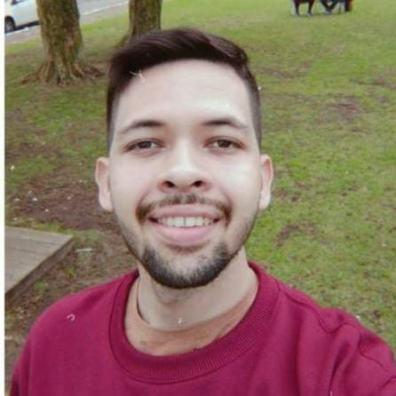

Michel Gonzaga dos Santos

Summary
I am a Ph.D. candidate at the Federal University of Ceará, Fortaleza-CE,
Brazil, majoring in Teleinformatics engineering. I also have a master's
degree in Data Science from Polyetch Nice, Sophia Antipolis, France, and a
bachelor's degree in telecommunications engineering from the Federal
University of Ceará. I am working as an intern at Ericsson's office in
Kista, Stockholm, Sweeden, where I am researching integrating sense and
communication.
Education
Ph.D. degree in Teleinformatics engineering
- Duration: From Dec. 2024 - Present.
-
Institution: Federal University of Ceará, Fortaleza-CE, Brazil.
M.Sc. degree in SSTIM - Data Science
- Duration: From Sep. 2018 - Sep. 2019.
- Instution: Polytech Nice, Sophia Antipolis, France.
B.Eng. degree in Telecommunications engineering
- Duration: From Feb. 2015 - Nov. 2020.
-
Institution: Federal University of Ceará, Fortaleza-CE, Brazil.
Work experience
Intern
- Duration: From Nov. 2023 - Present.
-
Institution: Ericsson Resarch AB, Kista, Stockholm, Sweeden.
-
Description: This internship is part of my Ph.D. studies. I have
been working on integrated sensing and communication (ISAC). Assuming a
cell-free network, I am mathematically comparing the advantages of
adopting this network over traditional architectures from a sensing
perspective.
Research engineer
- Duration: From Aug. 2021 - Present.
- Institution: GTEL, Fortaleza-CE, Brazil.
-
Description: In the meantime, I had the opportunity to work on
two projects financed by Ericsson. In the first one, my team and I
worked on beam management, exploiting uniform arrays of dual-polarized
elements. I am also working with ISAC on the second one, which is still
in progress.
Intern
- Duration: From Apr. 2019 - Aug. 2019.
- Institution: I3S, Sophia Antipolis, France.
-
Description: This internship was part of my master's studies. I
worked on tensor approaches for OFDM MIMO systems and proposed
closed-form solutions for efficientnnel estimation.
Skills
- Python (Intermediate level)
- Matlab (Intermediate level)
- LaTeX (Intermediate level)
- HTML (Beginner level)
Languages
- Portugues (Native speaker)
- English (C1 level)
- French (B2 level)
Other